|
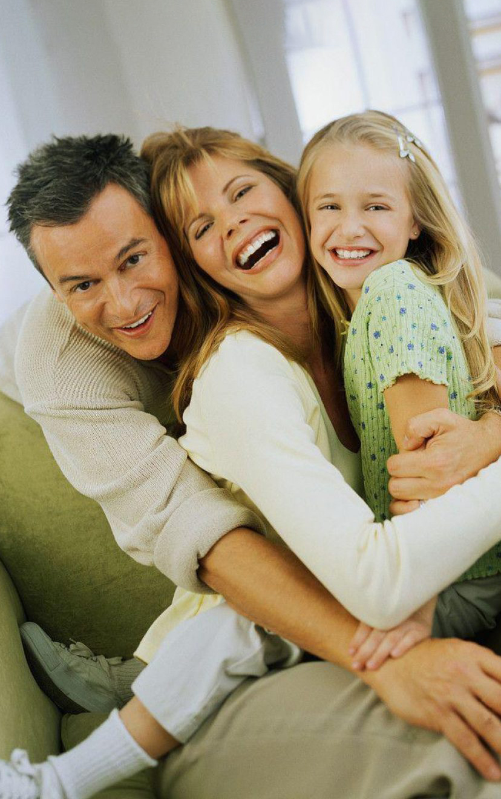
|
ПРОГРАММЫ
Программа "Профилактика социального сиротства"
Мы оказываем поддержку семьям в ситуации потенциальной угрозы изъятия или отказа от ребенка. Мы убеждены, что сохранить ребенка
в семье возможно, и многие дети не попали бы в детские дома, если бы их родителям вовремя была оказана необходимая помощь.
Наши психологи, юристы, социальные работники, волонтеры поддерживают тех, кто оказался в трудной ситуации: родителей - выпускников детдомов,
если есть опасность, что их дети тоже пополнят систему сиротских учреждений; многодетных матерей, которые остались без поддержки родственников. Мы помогаем родителям растить малышей с особенностями развития самостоятельно и не отдавать в детский дом.
Мы уже помогли более чем 700 семьям. Эти дети растут с любящими их людьми, а не в интернате.
Программа «Профилактика социального сиротства» помогает предотвратить попадание ребенка в учреждение ребенка на разных этапах жизни семьи.
| Проект "Профилактика отказов от новорожденных" |
Проект "Теплый дом" |
Проект "Помощь семьям в сложной жизненной ситуации" |
Проект "Помощь родителям с ментальными особенностями" |
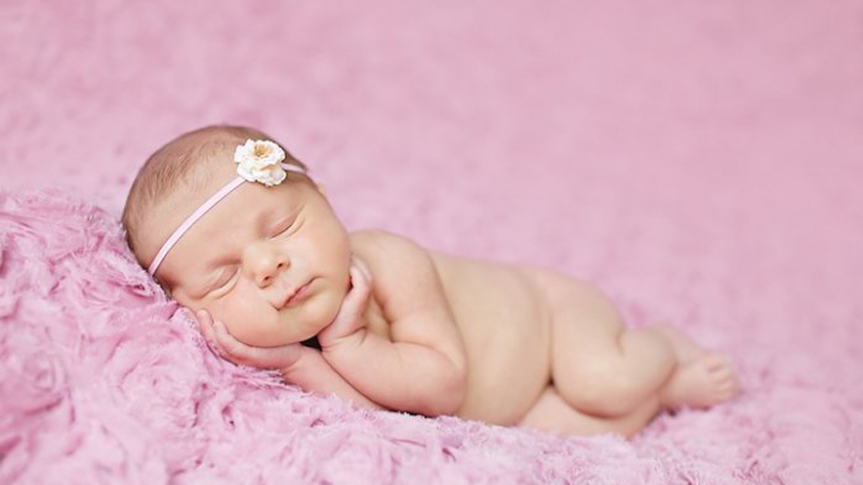
Мы сотрудничаем с роддомами, которые сообщают нам о мамах, планирующих отказаться от ребенка.
Психологи нашего фонда выезжают к женщинам в течение суток, выясняют обстоятельства, которые заставили задуматься об отказе от ребенка, и
предлагают поддержку, если у мамы есть желание сохранить ребенка.
|
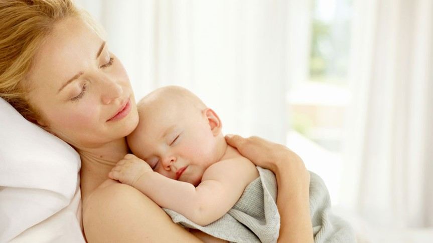
Задача "Теплого дома" — стать поддержкой для мамы в самый острый и тревожный период ее жизни, когда она осталась одна с младенцем на руках.
В центре работают психологи, юристы и социальные работники, которые помогают маме научиться заботиться о своем ребенке, а также разобраться с
теми проблемами, которые привели ее к трудной ситуации.
|
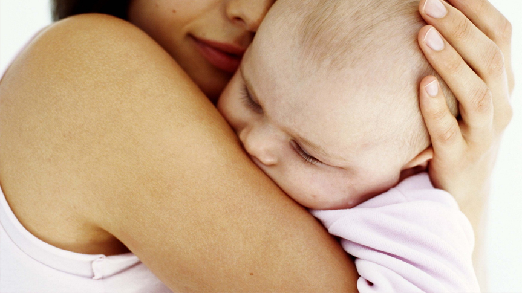
Мы оказываем комплексную поддержку семьям, которые находятся в ситуации угрозы отобрания или отказа от ребенка.
Куратор семьи, психолог и юрист совместно помогают родителям решить проблемы и не допустить попадание ребенка в государственное учреждение.
|
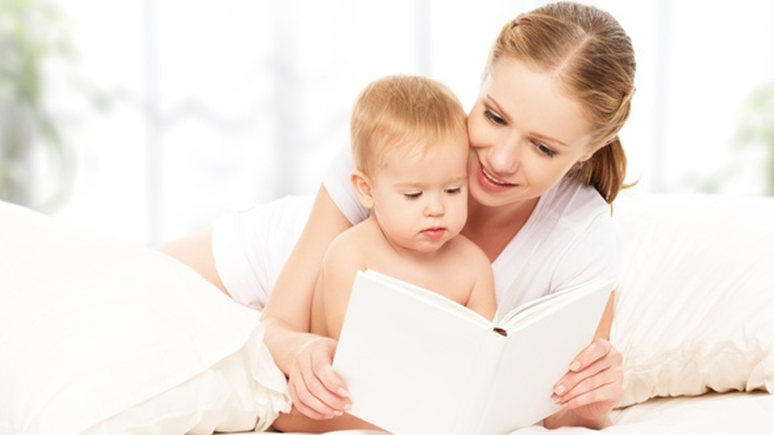
Мы помогаем родителям с ментальными особенностями и их детям. С ними работают психологи, юристы, социальные работники, специалисты в области
психиатрии и неврологии с целью сохранить семью.
|
Программа "Помощь детям сиротам в учреждениях"
Цель программы: улучшить условия жизни детей, которые потеряли семью и находятся в больницах и интернатных учреждениях.
Мы общаемся с ребятами из детских домов, помогаем в учебе и выборе профессии, стараемся обеспечить самым необходимым, оказываем помощь в лечении детей, оплачиваем работу нянь в больницах.
| Проект "Быть рядом" |
Проект "Дети в беде" |
Проект "Дистанционное образование" |
Проект "Отказники в больницах: ресурсное обеспечение" |
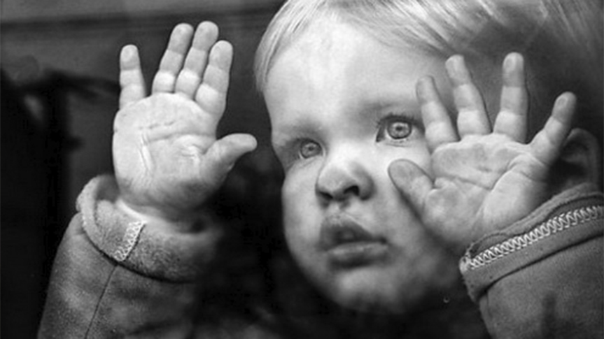
Мы поддерживаем детей, которые находятся в больницах и интернатных учреждениях. Волонтеры стараются обеспечить заботу,
уход и развитие детей, становятся их друзьями и наставниками, навещают молодых людей в психоневрологических интернатах.
|
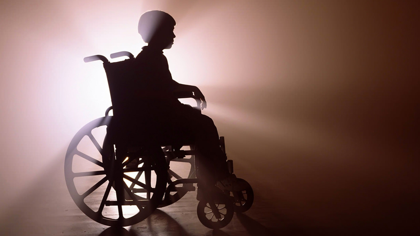
Мы организуем обследование, лечение и реабилитацию детей-сирот, которым необходима медицинская помощь, оплачиваем труд нянь,
которые ухаживают за детьми весь период лечения.
|
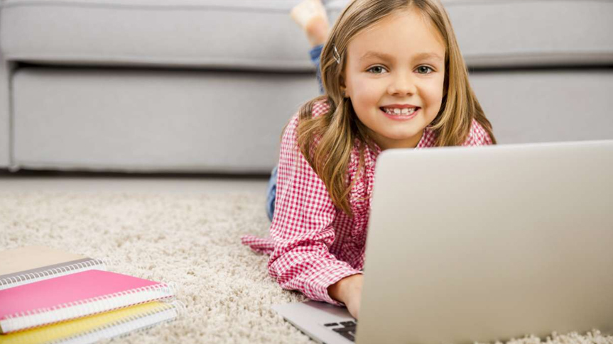
Фонд "Волонтеры в помощь детям-сиротам" совместно с Центром равных возможностей "Вверх" разработал проект "Дистанционное образование
воспитанников детских домов", который помогает воспитанникам интернатных учреждений в учебе, подготовке к экзаменам и поступлению в колледжи и вузы.
|
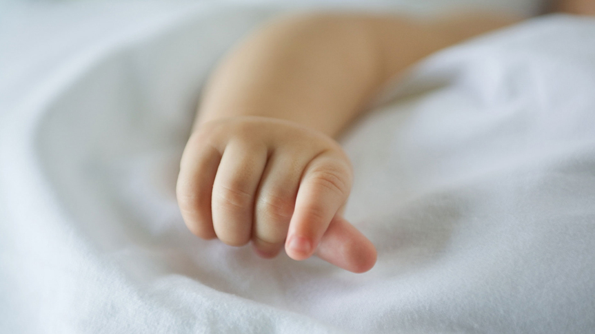
Цель проекта: улучшить условия пребывания детей-сирот во время нахождения в больницах, обеспечить им уход и заботу. В ряде больниц на средства наших
спонсоров оплачивается работа няни-воспитателя.
|
Программа "Семейное устройство"
Цель программы: помочь детям-сиротам найти семью, а родителям принять ребенка.
В рамках программы:
- мы содействуем в распространении информации о детях-сиротах и детях, оставшихся без попечения родителей,
- оказываем юридическую, психологическую, информационную помощь как семьям, которые только готовятся к воспитанию ребенка-сироты, так и состоявшимся приемным родителям,
- помогаем в решении вопросов лечения и реабилитации детей с инвалидностью и особенностями развития, которых воспитывают принимающие родители,
- оказываем услугу сопровождения приемных семей в соответствии с приказом Департамента труда и социальной защиты населения г. Москвы, а также проводим медиации между приемной и кровной семьей ребенка.
| Проект "Близкие люди" |
Проект "Информационный центр "Дети в семье" |
Проект "Территория без сирот" |
Школа приемных родителей |
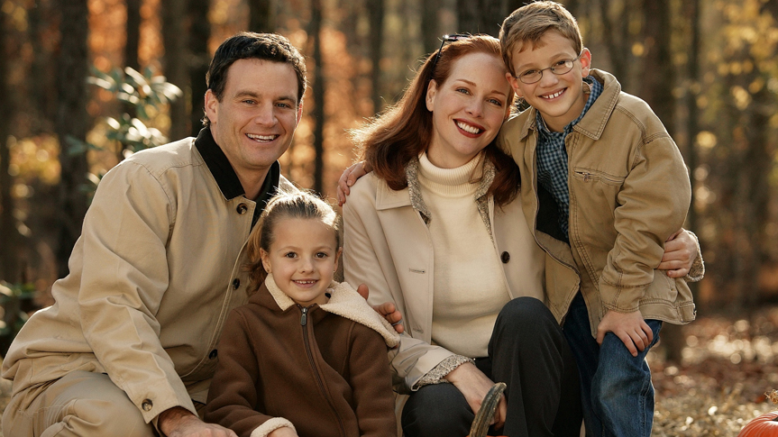
Проект "Близкие люди" помогает семьям, принявшим на воспитание детей с особенностями развития, со сложными или редкими заболеваниями в решении многочисленных вопросов, связанных с состоянием здоровья и системой реабилитации ребенка.
|
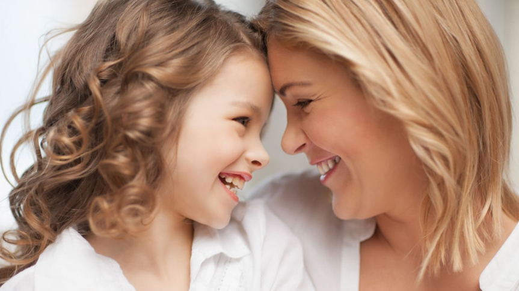
Специалисты проекта оказывают юридическую, психологическую, информационную помощь как семьям, которые только готовятся к воспитанию ребенка-сироты, так и состоявшимся приемным родителям.
|
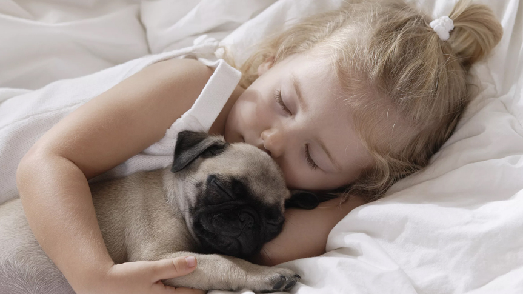
Мы оказываем содействие в распространении информации о детях-сиротах и детях, оставшихся без попечения родителей, а также информационную и методическую поддержку муниципальным органам опеки и попечительства.
|
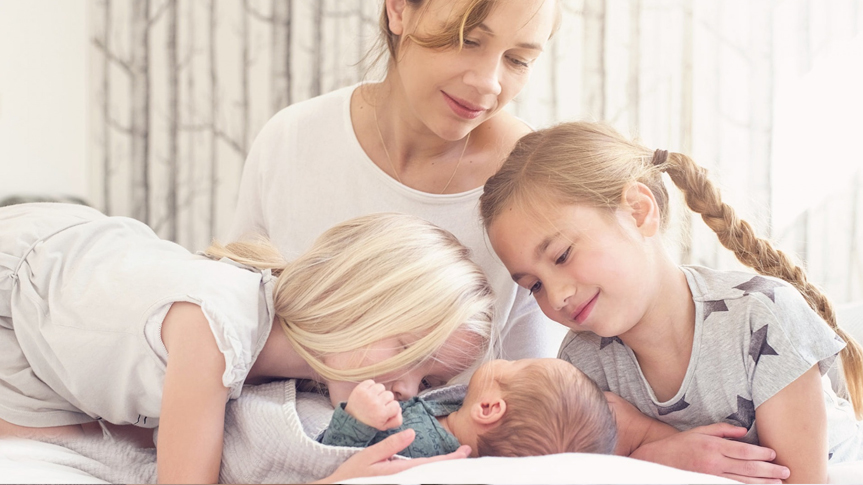
Кандидаты в приемные родители, которые планируют взять ребенка и ранее не обучались в ШПР, могут пройти общий курс подготовки. Cемьи, которые готовы стать временной поддержкой для ребенка, могут посетить краткосрочные модули.
|
Программа "На стороне ребенка"
Цель программы: изменение ситуации с социальным сиротством, законодательства, общественного мнения и всей системы помощи семьям и детям, попавшим в трудные ситуации.
Мы организуем работу юристов над законодательными изменениями, обучение сотрудников организаций для детей-сирот и сферы защиты прав детства, проводим мониторинг учреждений.
Благодаря активной работе, в том числе, нашего фонда над продвижением и разработкой нового законодательства (постановления правительства РФ № 481 «О деятельности организаций для детей-сирот и детей, оставшихся без попечения родителей») в России идет реформа детских домов.
Они должны стать местами, устроенными по-домашнему, условия жизни в них должны быть максимально приближены семейным. Само пребывание там ребенка теперь считается только временным — как можно скорее он должен быть возвращен в кровную семью, а если это не представляется возможным — то в приемную.
|